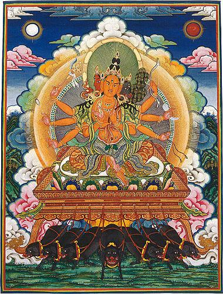

「摩利支」，為梵語（Marici）之音譯，其義解作威光或陽焰，
威光者，具有大威德之光明也；陽焰者，太陽本體燃燒所發放出之火
焰也。「天」為梵語（Deva）之意譯，音譯作「提婆」，解釋為天界
。根據經中記載，摩利支天菩薩擅長於隱身法術，其威德之光明有如
太陽所發出之火焰，但菩薩時常行走於日前，而不為日所見，從德立
名，故名「摩利支」。「摩利支」屬於佛教天部中的一位菩薩，由於
梵語譯音關係，「摩利支天菩薩」，亦譯作「末利支天菩薩」，「摩
里支天菩薩」，漢語也可稱呼作「威光天菩薩」或「陽焰天菩薩」。
（二）摩利支天菩薩之經卷
以處名唐朝開元三大士之一的不空三藏所譯出之經軌，已有四種之多
，分別為：（甲）末利支提婆華鬘經。
（乙）佛說摩利支天菩薩陀羅尼經。
（丙）佛說摩利支天經。
（丁）摩利支菩薩略念誦法。
以上篇幅皆為卷。其它尚有宋朝天息災法師所譯之「佛說大摩里
支菩薩經」七卷，此為篇幅最大者及卻譯者名稱所譯之「佛說摩利支
天陀羅尼咒經」、「摩利支天一印法」等等。
（三）摩利支天菩薩之法相
像等等。根據不空三藏所譯之「佛說摩利支天經」記載，二臂像之法
相如下：「若欲供養摩利支菩薩者，應用金或銀或赤銅，或白檀香木
或紫檀木等，刻作摩利支菩薩像，如天女形，可長半寸或一寸二寸已
下於蓮花上或立或坐，頭冠瓔珞種種莊嚴，極令端正。左手把天扇，
其扇如維摩詰前天女扇，右手垂下揚掌向外，展五指作與願勢，有二
天女各執白拂侍立左右。」
又根據不空三藏譯之「末利支提婆華鬘經」記載：「作天像法，
其像二手，左一手屈臂向上平橫，當左乳前把拳，拳中把拂，形如講
法師高座上所把形，於其拂中作西國萬字形，亦如佛像胸上字，字四
曲內各作日形，一一著之，著四箇日形，其拂上作焰形。右一手申臂
及指解垂下，其作像法，畫像一種無別，其像身長一寸二寸乃至一肘
。」
宋朝天息災法師所譯之「佛說大摩里支菩薩經」，則記載菩薩有
三面六臂及三面八臂之形像，此經卷二說：「復有成就法，觀想月輪
之中有摩里支菩薩，坐身紫金色放金色光，著青衣及青天衣，種種莊
嚴。六臂三面各有三眼，頂戴寶塔，正面黃金色微笑。左面黑色出舌
顰眉，作大醜惡相，令人怕怖，右面如同秋月圓滿清淨。左手執弓、
線及無憂樹枝，右手執箭、針、金剛杵。」
「山中間有一月輪，輪上有一●字，其字變成自身如摩里支形相
，於月輪中乘豬車而立。身作金色，六臂殊妙，三面各三眼，一面作
豬相。頂戴寶塔著黑衣及青天衣，右手持金剛杵，有大光明及箭、針
；左手持弓、線及無憂樹枝。」以上就是有關菩薩三面六臂像之記述
。
同經卷四：「經須臾之間身如閻浮檀金色，光明閃爍等百千日。
八臂二足三面各三眼，左右二面作豬相，黑色忿怒顰眉，掛青天衣，
耳環、指環、腕釧、腳釧、環珞、鈴鐸等出微妙音。如是復有種種諸
龍莊嚴身上，有黃龍於其頂中，放摩尼光，周迴照曜。又此菩薩戴無
憂花，髮髻豎立，於其髻上復戴寶塔，又於塔中出無憂樹，其花開敷
‧‧‧左手執弓有無邊德，牽其弓箭，弦可至耳；第二手持●酥枳龍
，口出二舌，身如其線；第三手持德叉迦龍並無憂花；第四手作期克
印，並持羯里俱吒迦龍及索。右手持俱隸迦龍；第二手持●納摩龍並
牽弓；第三手持大●納摩龍，亦出二舌並針線；第四手持商佉羅龍，
以吉祥草纏龍手。」
同經卷七：「觀想自身，亦成摩里支菩薩，深黃色亦如閻浮檀金
色，或如日初出之色，頂戴寶塔著紅天衣、耳環、腕釧、寶帶、瓔珞
，種種莊嚴，八臂三面三目，唇如曼度迦花色，放大光明，於寶塔內
有毗盧遮那佛。戴無憂花鬘，左手持絹索、弓、無憂樹花及線；右手
持金剛杵、針、釣、箭。正面善相微笑，深黃色或檀金色，眼相修長
，唇如朱色，作大勇猛相；左面豬容，忿怒醜惡，利牙外現，出舌顰
眉，令人怕怖；右面深紅如蓮花寶色，出最上光明，慈顏和悅，如童
女相。手作毗盧印，乘彼豬車，立如舞蹈勢。」以上就是有關菩薩三
面八臂像之記述。
（四）摩利支天菩薩法門及功德
修持摩利支天菩薩法門具足息災、增益、懷愛及降伏四法之功德
，能滿足行者所求種種正確及善性之心願。譬如修持者不會被別詐騙
其財物，亦不會被人捉縳囚禁，亦或被與行者有仇怨之人加害。其它
如治病（肉體上四大不調之病及靈界病）、護身（防止一切毒丸蟲惡
獸及人與非人之侵害）、求聰明長壽、求辯論得勝、求降雨、求福、
求子女等等，莫不一一靈驗應心，具如經中所說，功德讚不能盡。
如前所說，摩利支天菩薩示現不同之法相，為教化不同根器之眾
生，亦配合不同修法之用途。在經中記載菩薩之修法有多種多樣，為
滿足眾生各種之需求。不同之修法，有其特別規定之畫像方法、真言
、觀想及手印。在摩利支天菩薩之真言當中，以菩薩之「六字最上心
真言」為行者最易學習及持誦，此真言就是菩薩之最上心印。「佛說
大摩里支菩薩經」卷一：「今有成就之法，用好綵帛及板木等，於其
上畫無憂樹，於此樹下畫摩里支菩薩，身如黃金色，作童女相，挂青
天衣，手執蓮花，頂戴寶塔莊嚴。如是畫已，於此幀前，誦最上心真
言八千遍，所求之事，決定成就。」
真言如下：
真言梵文原本：
真言唐朝漢音：唵。摩哩唧。娑賀。
真言宋朝漢音：唵。摩里支。娑賀。
真言拉丁梵音：OOM MARICI SVAHA
真言廣州近音：唵。媽喱衣支。斯娃哈。
行者若無暇受持讀誦本經，可一心持誦菩薩之六字最上心真言，
供養菩薩之寶像，功德亦無量無邊，所求善願，無不稱心如意。
十人俱。復有無量大菩薩眾。彌勒菩薩。曼殊室利菩薩。觀世音菩薩
。而為上首。及摩利支等。諸天龍八部。前後圍遶。
爾時。舍利弗即從座起。偏袒右肩。右膝著地。合掌向佛。而白
佛言。世尊。於未來世。末世眾生。作何等法。得脫諸難。佛告舍利
弗。諦聽。諦聽。我今為汝說於此事 枙r。會眾歡喜踴躍重勸請佛
。
爾時。世尊告諸比丘。日前有天。名摩利支。有大神通自在之法
。常行日前。日不見彼。彼能見日。無人能見。無人能知。無人能捉
。無人能害。無人欺誑。無人能縳。無人能債其財物。無人能罰。不
畏怨家能得其便。
佛告諸比丘。若有人知彼摩利支天名者。彼人亦不可見。亦不可
知。亦不可捉。亦不可害。亦不為人欺誑。亦不為人縳。亦不為人債
其財物。亦不為人責罰。亦不為怨家能得其便。
佛告諸比丘。若善男子。善女人。知彼摩利支天名者。應作是言
。我弟子某甲。知彼摩利支天名故。無人能見我。無人能知我。無人
能捉我。無人能害我。無人能欺誑我。無人能縳我。無人能債我財物
。無人能責罰我。亦不為怨家能得我便。此咒有大神力。所作成就。
破一切惡。若用結界。百由旬內。一切諸惡一無敢入者 。
爾時世尊即說咒曰。
南無佛陀耶。南無達摩耶。南無僧迦耶。怛姪他。遏囉迦末斯。
摩囉迦末斯。蘇途末斯。支●囉末斯。摩訶支●囉末斯。摩利支夜末
斯。安怛陀那夜末斯。那謨粹都底。莎訶。王難中護我。賊難中護我
。失於道路曠野中護我。晝日護我。夜中護我。水難中護我。火難中
護我。羅剎難中護我。荼枳爾鬼難中護我。毒藥難中護我。佛實語護
我。法實語護我。僧實語護我。天實語護我。仙人實語護我。怛姪他
。阿羅拘隸。雞栗底。薩婆迦囉醯蔽。薩蒲跛突瑟●蔽。薩婆伊都波
達羅鞞蔽。囉叉囉叉。莎呵。
奉請摩利支天咒。一名摩利支天身咒。咒曰。
娜謨囉跢那跢囉夜耶。摩唎支唎馱耶。摩婆帝移沙彌。跢姪他。
婆囉梨。婆馱梨。婆囉呵目溪。薩婆徒瑟誓。槃馱槃馱。娑婆呵。
佛告諸比丘。若有人識彼摩利支天菩薩者。除一切障難。王難賊
難。猛獸毒蟲之難。水火等難。若人欲行此法者。一切法中。此法最
勝。持此咒者。面向百踰闍那。一切鬼神惡人。無能得其便者。若於
難中行時。晨起誦前身咒。咒一掬水。四方散灑。及灑自身。若衣襟
。若衣袂。若袈裟角。一咒一結。總作三結。即往難中行。連誦前二
大咒而行。所有一切事難。軍防主者。悉皆迷醉。都無覺知之者。
。及諸人民等。聞佛說是摩利支天陀羅尼。一心受持之者。是人不為
一切諸惡所害。諸比丘。若有人能書寫。讀誦。受持之者。若著髻中
。若著衣中。隨身而行。一切諸惡。悉皆退散。無敢當者。是諸四眾
。天龍八部。禮佛而退。歡善奉行。
佛說摩利支天菩薩陀羅尼經